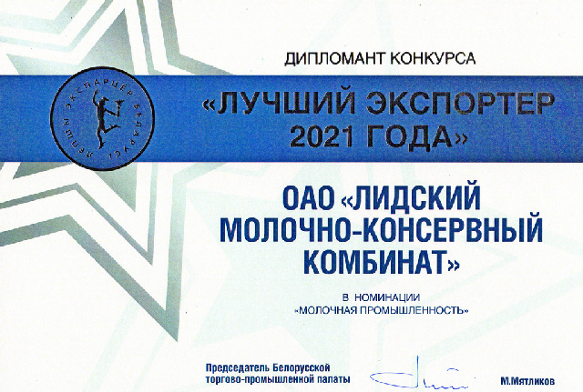
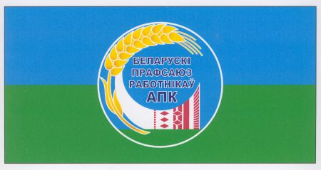

Компания сейчас
ОАО «Лидский молочно-консервный комбинат» является одним из лидирующих предприятий по производству
молочных продуктов в Республике Беларусь.
2012 год на предприятии прошел под знаком перемен. В
структуру акционерного общества вошли филиалы:
– «Ошмянский сыродельный завод»
– «Сморгонские
молочные продукты»
– «Новогрудские дары»
В результате создано одно из крупнейших молочных
объединений в нашей стране, соединившее четыре специализированных предприятия молочной промышленности
Гродненской области. В связи с присоединением филиалов ОАО "Лидский молочно-консервный комбинат"
провело ребрендинг торговой марки. Сегодня общество выходит на рынок под единым корпоративным брендом
MiLida.
Объединив производственные мощности, ОАО «Лидский молочно-консервный комбинат» способен
переработать до 1750 тонн молока в сутки. Новый формат предприятия позволяет говорить о выпуске комплекса
разнообразных молочных продуктов, ассортимент включает более 200 наименований. Это сухие молочные
продукты, такие как:
- молоко сухое обезжиренное
- молоко сухое цельное с м.д.ж. 26 %
-
сливки сухие с м.д.ж. 42 %
- сыворотка сухая
- пахта
- казеин
А также:
- масло
сладкосливочное несоленое 72,5 % и 82,5 % жирности
- сыры в ассортименте
- творог замороженный
обезжиренный, 5 % и 9 % жирности
- цельномолочная продукция
Открытое акционерное общество
активно развивается и уделяет особое внимание вопросам качества продукции, расширению торговли в регионах,
единой логистике, а также новым технологиям производства и оптимизации ассортимента продукции для более
полного удовлетворения потребительского спроса.
Одной из приоритетных целей работы общества является
стимулирование развития экспортоориентированного производства, содействие повышению престижа продукции на
мировом рынке. Общество экспортирует продукцию в Россию (Санкт-Петербург, Владивосток, Южно-Сахалинск),
Армению, Казахстан, Грузию, Японию, Китай, ОАЭ, Сингапур.
История
В 1949 году началось строительство молочно-консервного завода в Лиде. И в 1952 году завершилось
строительство завода для производства сухих молочных консервов. За счёт расширения сырьевой зоны
предприятие заработало на полную проектную мощность и выпуск сухих молочных консервов увеличился
вдвое.
В 1961 году коллектив предприятия начал отправлять свою продукцию на экспорт в Кубу, Италию, Францию,
Египет. Позже случилось переименование завода в Лидский молочно-консервный комбинат. В 1961-1963 годах
первая реконструкция завода и установка холодильного оборудования.
Введён в эксплуатацию цельномолочный цех и
выпуск продукции увеличился до 18 000 тонн в год.
В 1987 году был построен цех сухого обезжиренного молока и выпуск разнообразной молочной продукции. В
1990-е годы произошла реконструкция и модернизация оборудования.
В 2011 году случилась реорганизация в ОАО "Лидский молочно-консервный комбинат". В
структуру предприятия вошли два филиала: «Сморгонские молочные продукты», «Ошмянский сыродельный
завод». Сегодня комбинат оснащен современным оборудованием, сосредотачивается на техническом развитии
и повышении качества продукции.
Достижения

"Лучший экспортер 2019 года".
Одним из главных достижений ОАО "Лидский молочно-консервный комбинат" является
победа в конкурсе "Лучший экспортер 2019 года". Конкурс является ежегодным и проводится по 22
номинациям. Белорусская торгово-промышленная палата проводит его совместно с заинтересованными
министерствами, госкомитетами, концернами, облисполкомами и Минским горисполкомом, бизнес-союзами,
Белорусской универсальной товарной биржей, страховой компанией «Белэксимгарант» и Администрацией Парка
высоких технологий.
Общественные объединения

Белорусский профессиональный союз работников агропромышленного комплекса.
В марте 1986 года было создано объединение профсоюзов работников агропромышленного комплекса в
республике. В мае 1990 года было принято решение о создании самостоятельного профсоюза работников
агропромышленного комплекса. С последующими съездами в 1995 и 2000 годах были внесены изменения в Устав.
В марте 2003 года на пленуме Республиканского комитета был избран председателем В.Ф.Наумчик. В апреле
2015 года состоялся VI съезд, на котором председателем был избран Лабушев Николай Аксенович. Белорусский
профсоюз работников агропромышленного комплекса включает более 600 тысяч членов и 3 тысячи первичных
профсоюзных организаций. Основная цель - защита трудовых, профессиональных и социально-экономических
прав членов, включая повышение жизненного уровня, обеспечение трудовой занятости, поддержку здоровых
условий труда, обучение и юридическую защиту.
Республиканские Общественные Объединения Белая Русь.
28 июля 2004 года было создано Гродненское областное общественное объединение «Белая Русь». В мае 2007
года началось создание общественных организаций «Белая Русь» в различных регионах. В ноябре 2007 года
было объединено несколько областных и городских объединений в Республиканское общественное объединение
«Белая Русь». В декабре 2007 года объединение было зарегистрировано Министерством юстиции. В августе
2008 года был зарегистрирован официальный герб. В сентябре 2008 года активисты участвовали в выборах в
Национальное собрание. В октябре 2008 года состоялся I Съезд, на котором утверждена Программа
объединения. В декабре 2008 года был принят План мероприятий на 2009-2010 годы. Акция «Белая Русь - с
любовью к детям!» стартовала 3 июля 2009 года. 20 ноября 2009 года открылась общественная приемная
Республиканского Совета РОО «Белая Русь».
Белорусский республиканский союз молодёжи.
Общественное объединение «БРСМ» является правопреемником комсомола Беларуси, Союза молодежи Беларуси,
Белорусского патриотического союза молодежи и Белорусского союза молодежи. Оно было создано 6 сентября
2002 года на объединительном съезде. Членами могут быть граждане иностранного государства, постоянно
проживающие в Беларуси, в возрасте от 14 до 31 года. Целью объединения является развитие молодежи,
содействие гражданскому обществу на основе патриотических и духовно-нравственных ценностей. «БРСМ»
объединяет людей, готовых активно участвовать в жизни общества, реализовывать свои идеи и планы,
получать поддержку и обсуждать важные вопросы. Работая в «БРСМ», молодежь ощущает себя частью
белорусской общности и стремится делать жизнь интереснее и ярче.
Общественные Объединения "Белорусский союз женщин".
Общественное объединение «Белорусский союз женщин» было создано 14 декабря 1991 года и объединяет
женские советы на добровольной основе. В настоящее время в союзе состоит более 183 тысяч женщин,
организованных в свыше четырех тысяч первичных организаций. Высшим органом является конференция, а
постоянно действующими руководящими органами являются Правление и Президиум. Цели и задачи БСЖ включают
повышение статуса женщин, достижение гражданского согласия, организацию просветительской и
консультационной работы, содействие охране здоровья женщин, защиту прав женщин и детей, а также
международную деятельность методами женской дипломатии. Руководит Лидской районной организацией Ивуть
Светлана Валентиновна.